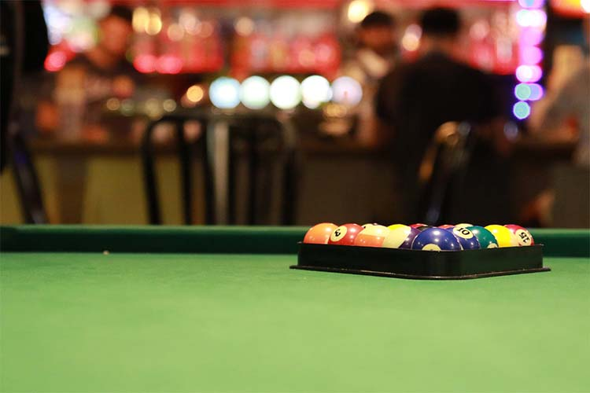
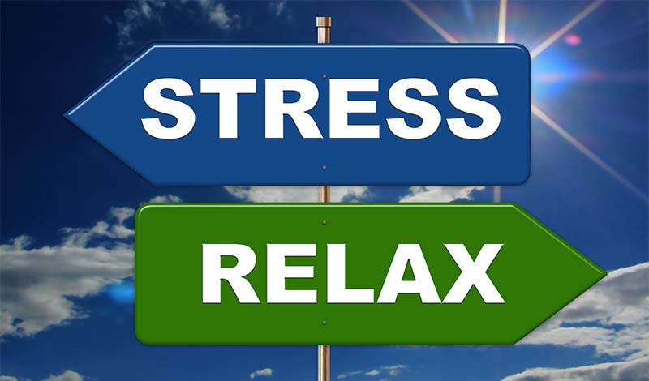

You get ready and go out to the bar.
As you're approaching the bar you see that your friends are in a great mood and are excited to see you again.
That makes you have contradictory feelings: seeing them makes you happy and you realize how much you missed your friends, that it has been too long since the last time you hung out and how important these friendships are to you;
however, since you haven't told them how you feel about your anxieties, the pressure seems to become even more burdensome and exert more power over you.
You overcome the fear and decide to open up to your friend about your anxieties, pressure of time and all the rest.
Both of your friends are understanding and supportive, just as you thought (actually knew) they would be.
The conversation makes you acknowledge the power of friendship: the power of talking about your problems and the power of listening to your friends' experiences with the same or similar feelings and how they've dealt with them in the past or perhaps are currently dealing with them.
You realize how good this makes you feel, and that actually while talking with your friend you haven't felt the pressure of time even though everything you've been talking about is that very pressure of time.
You feel relieved to finally have it off your chest, even if just for a brief moment.
You think: where have I been this whole time, what have I been doing, why haven't I thought of talking to my friends before and how could I forget how much I enjoy their company?
You're enjoying the time with your friends and you decide to stay a little longer, play another game of pool and now that you've talked with your friends about your anxieties, you are free: you can have a little fun, talk about something else, talk with your friends and listen how they're doing: be a good friend.
You acknowledge how much you've missed this, how blind you've been to your own feelings and, in fact, your mental health, you know that you need this time off to be able to return to your studies tomorrow with a fresh view on things simply because you took one night off and finally-for once-thought of something else, thought of yourself other than work.
You have another drink, you laugh (you actually can't remember when was the last time you genuinely laughed), you realize how much you've missed your friends and how much you love them.
But then, suddenly, out of nowhere, you remember of all the work that you still need to do until the submission deadline. The anxiety overtakes you again and you're plunged right back into the reality.
So as you're finishing your second drink, you are thinking of how to proceed after having had this inner dilemma resurface again:
